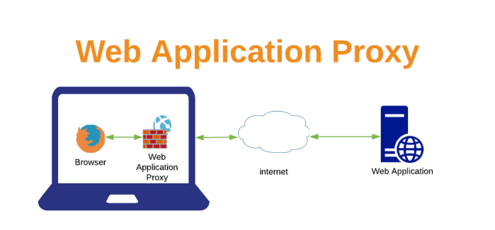
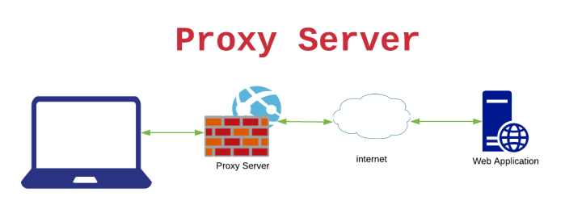

Tools
Web Application Proxy and
proxy server are two things completely different
Web application proxies (like BurpSuite Proxy, ZAProxy) allow to intercept the requests/responses between the web server and the client HTTP application
With a Web Application Proxy like Burpsuite(in proxy mode) we can intercept and modify(by hand or automatically) Body and Header of requests and responses between the browser and the web server.